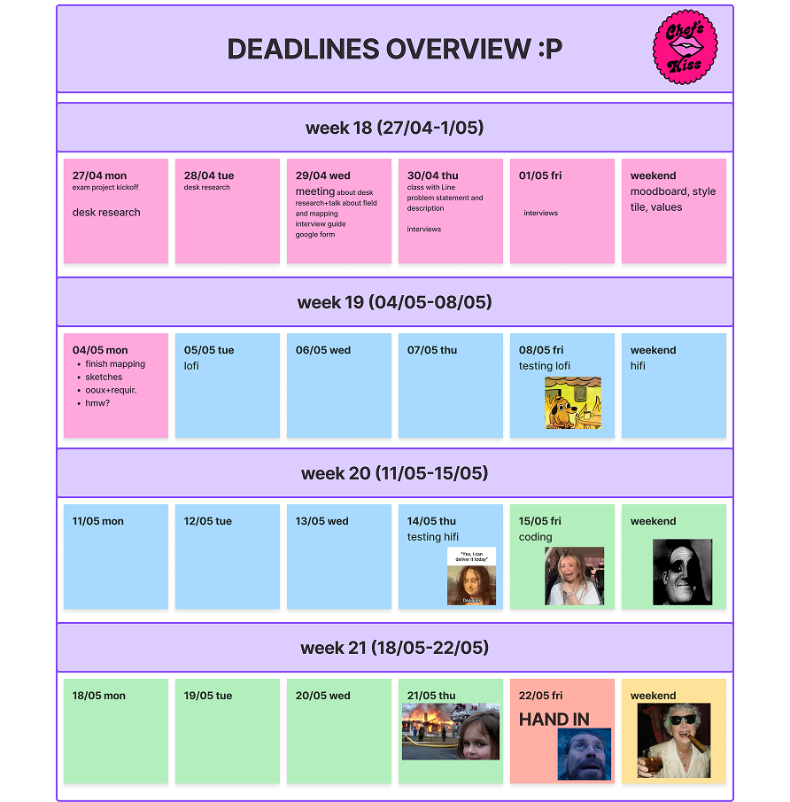
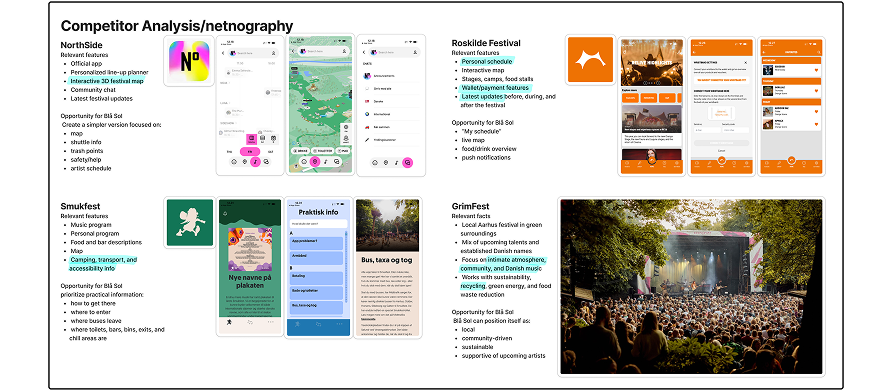
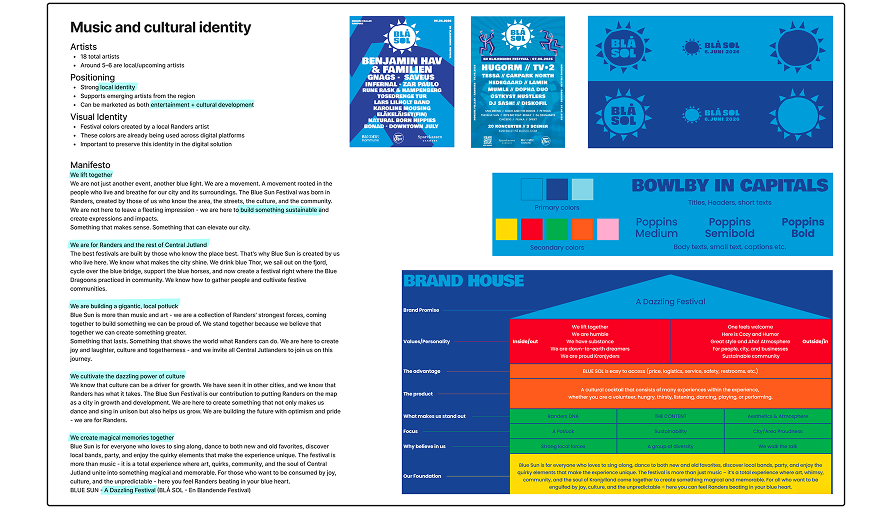
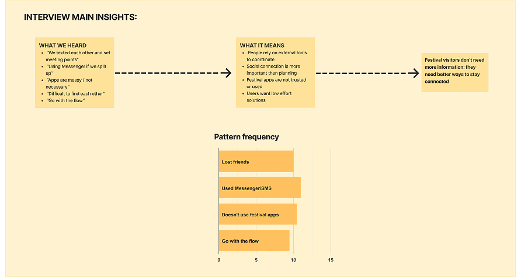

01.1 Planning
The first thing we did was focusing on organizing our workflow as a team. We created a project timeline with milestones and internal deadlines that preceded the official submission date, ensuring we had enough time for iterations and refinement.

To facilitate collaboration, we also mapped each team member's availability in a shared calendar. This made it easier to schedule meetings and divide tasks efficiently despite different schedules. This gave us dedicated time for feedback and iterations instead of rushing to finish before the final deadline.
01.2 Foundational Research
Before defining the problem, we wanted to understand how people experience festivals and where existing digital solutions fall short. Since BLÅ SOL had not yet taken place, we combined desk research, netnography, observations, and interviews to build a comprehensive understanding of our users and their environment.
Desk Research and Netnography
We began by researching music festivals, festival applications, and current digital solutions available on the market. This helped us understand common features, identify recurring pain points, and explore opportunities where a new solution could provide additional value.

We also gathered information about BLÅ SOL itself, including its target audience, organisational identity, communication channels, and visual language. This helped us identify how the solution could support the festival while remaining consistent with its existing identity.

To complement our desk research, we analysed discussions and content shared on social media platforms where festival visitors communicate and exchange experiences. By observing conversations, comments, and user-generated content, we gained insight into visitors' expectations, frustrations, and behaviours before, during and after festivals. This helped us identify recurring themes that could later be explored in interviews.
Observations
Because the 2026 edition of BLÅ SOL had not yet taken place, we conducted contextual observations using photos and videos from Grøn Festival, a Danish music festival with a similar atmosphere and audience.
We focused on how people moved through the festival, interacted with friends, and used their phones in real situations.
Interviews
To ensure our findings reflected BLÅ SOL's intended audience, we interviewed Danish festival-goers aged 18–34 who regularly attend festivals with friends.
Although they were not necessarily BLÅ SOL attendees, they represented the same target group and shared comparable behaviours, motivations, and challenges.
Across the interviews, participants consistently described festivals as highly social experiences where spending time together was one of their main motivations for attending. However, they also highlighted recurring frustrations such as getting separated from friends in crowded areas, struggling to coordinate meeting points, relying on messaging apps that often became inconvenient, and having plans change spontaneously throughout the day.
These insights confirmed that the challenge was not simply about navigation, but about supporting social coordination in a way that felt intuitive and non-intrusive.
